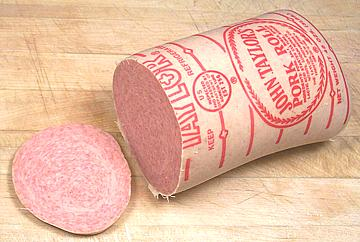
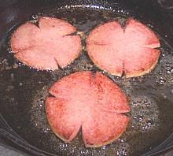

Jersey Pork Roll

[Taylor Ham]
This "King of Mystery Meats" is made by several companies in or around
Trenton, New Jersey. Maker John Taylor has become sufficiently dominant
to make "Taylor Ham" a generic alternative to Jersey Pork Roll but some
connoisseurs prefer products from smaller makers.
The recipes are all secret, but one thing is for sure, salt. Enough
salt so I think the product is eternal - even mold doesn't grow on it.
Several sellers ship pork roll to most points in the U.S. packed in
styrofoam with frozen gel packs. The photo specimen (4 inch diameter, 3
pounds) was shipped to me UPS 4 day ground courtesy Mike Vitale (Yendor).
The most famous use for Pork Roll is the
Jersey Breakfast Sandwich - widely popular in New Jersey and
Pennsylvania.
More in Sausages.

Buying:
Unless you live in New Jersey or adjacent states this
is a mail order item. Fortunately it's easily available (many people from
New Jersey can't live without it). Shipping costs are not so astronomical as
for most "gourmet" items because it can be shipped ground to most points in
the U.S.. Typical vendors are
The Taylor Ham Man
Jersey Pork Roll.
Storage:
Keep refrigerated. It has a liberal expiry, a
couple months as I recall, but with good refrigeration I know from
experience that expiry is not a hard date.
Cooking:
Pork roll is most often fried, sliced for
sandwiches or diced for hash, ham and eggs, or similar recipes. It is
also used in baked recipes and in stuffings. If you slice it you need
to deeply incise the edges as shown in the photo (fireman's badge) or
the slices will bulge up badly in the middle and not fry evenly. Pork
roll should not be over-fried or it will shrink badly and dry out.
sg_njprz 071013 - www.clovegarden.com
©Andrew Grygus - agryg@clovegaden.com - Photos on this
page not otherwise credited are © cg1 -
Linking to and non-commercial use of this page permitted